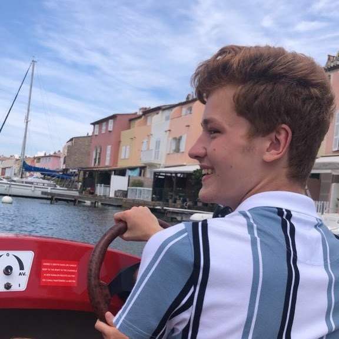

N'avez-vous jamais été perdu en arrivant sur une toute nouvelle carte Among Us ? Ne vous êtes vous jamais demandé comment nous pourrions régler ce problème ?
Dans l'intention d'aider des centaines de personnes en détresse, cette plaforme: Sussy Tracker, est née en fin 2022, avec à ses commandes, 4 étudiants Lillois

Clement Tassin
À l'initiative de ce site web, il faudra qu'il attende l'arrivée de ses collègues et camarades pour que son projet prenne entièrement vie
Victor Vandevoir
Ami proche de Clément Tassin, il ne découvrira le projet qu'au cours d'une soirée et sera immédiatement tenté par l'aventure Sussy tracker

Irshad Mohamed Ali
S'étant lui-même surpris d'une passion pour le célèbre jeu Among Us,il a décidé de rejoindre le développement de ce site web, afin d'aider de nombreuses personnes

Sasha Le Roux Zielinski
Arrivé plus tardivement dans le projet, il a quand même réussi à trouver sa place au sein de l'équipe